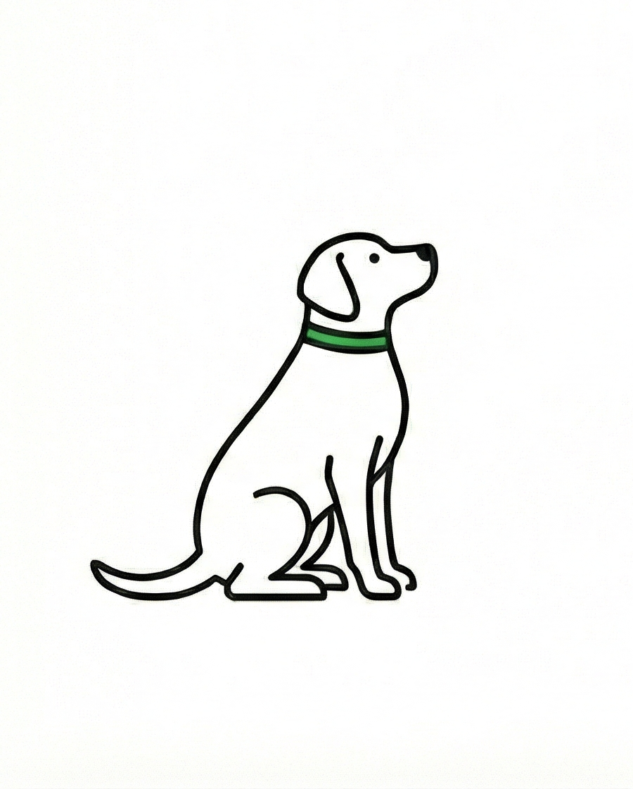
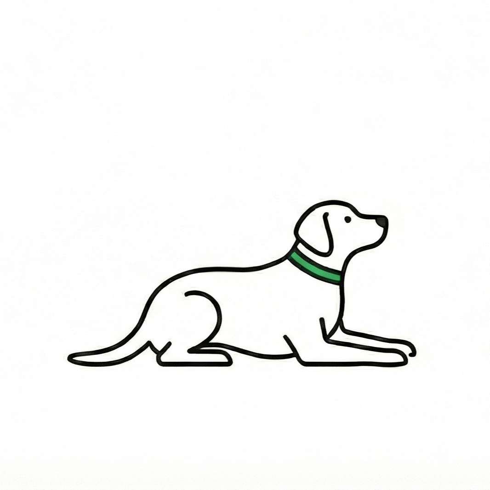
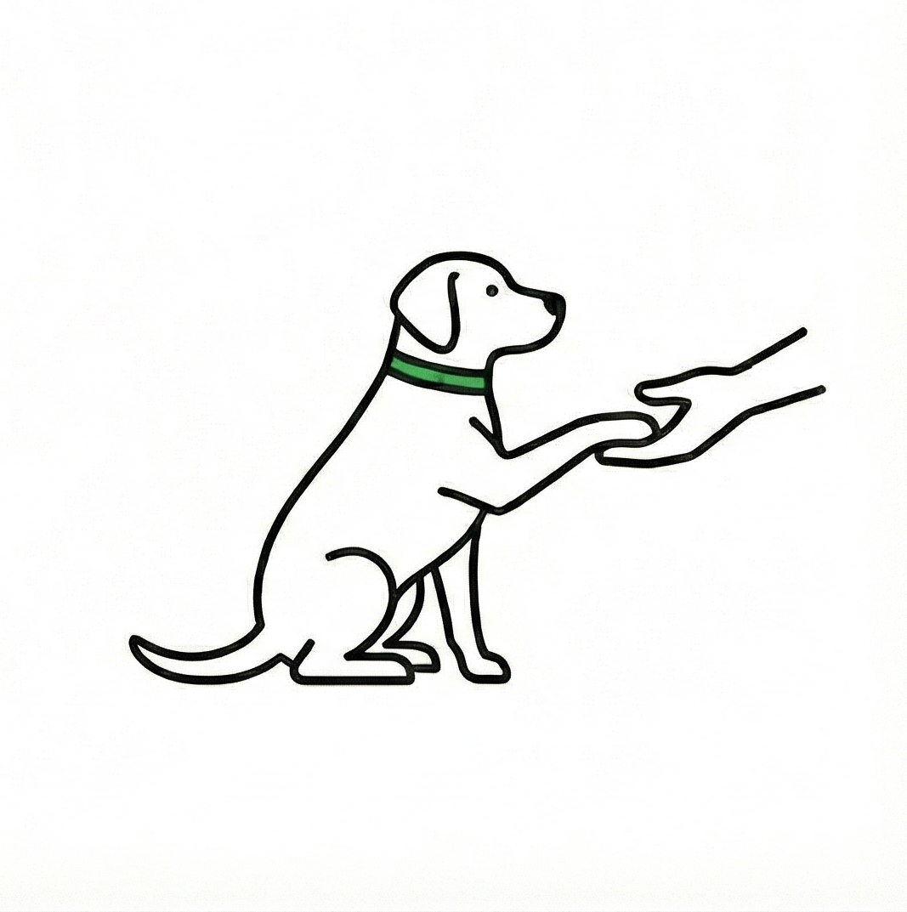

Podstawy Treningu
Szkolenie to nie tylko nauka sztuczek, ale przede wszystkim budowanie więzi i komunikacji z psem. Poniżej znajdziesz instrukcje do trzech fundamentalnych komend, od których warto zacząć.

1. Komenda "Siad"
- Pokaż psu smakołyk i pozwól mu go obwąchać, a następnie trzymaj go w zamkniętej dłoni na wysokości jego nosa.
- Powoli przesuwaj rękę z przysmakiem nad głowę psa w kierunku jego ogona.
- Pies, podążając wzrokiem za smakołykiem, naturalnie usiądzie, aby nie stracić go z oczu.
- Gdy tylko usiądzie – nagrodź go.
- Stopniowo zmniejszaj gest ręką, aż pies będzie siadał na samą komendę "siad".
Ważna zasada:
Na początku nie dodawaj komendy słownej. Zacznij to robić dopiero, gdy pies zrozumie gest i tylko w momencie, gdy już siedzi. Inaczej może przypisać słowo do złego zachowania.

2. Komenda "Leżeć"
- Poproś psa, by usiadł. Trzymaj smakołyk przy jego nosie.
- Powoli opuszczaj rękę z przysmakiem w dół, między przednie łapy psa, a następnie lekko do przodu (kształt litery L).
- Nagradzaj psa małymi krokami: najpierw gdy zbliży łokcie do ziemi, a finalnie gdy położy się całkowicie na brzuchu.
- Z czasem ćwicz z pustą ręką (smakołyk trzymaj w drugiej dłoni lub saszetce) i nagradzaj dopiero po wykonaniu zadania.
- Stopniowo zmniejszaj gest dłonią, aż pies zacznie reagować na samo słowo "leżeć".
Ważna zasada:
Podobnie jak przy "Siad" – słowo "Leżeć" wprowadzamy dopiero, gdy pies rozumie już o co chodzi w geście.

3. Komenda "Daj łapę"
- Pies powinien znajdować się w pozycji siedzącej.
- Zamknij smakołyk w dłoni i wyciągnij rękę na wysokość łapy psa (zachęta do ruchu).
- Nagrodź psa, gdy tylko położy łapę na Twojej ręce lub jej dotknie.
- Powtarzaj ten etap, aż pies zrozumie mechanizm.
- Stopniowo zacznij wystawiać pustą dłoń (smakołyk w drugiej ręce) i minimalizuj gest, aż wystarczy sama komenda słowna.
Socjalizacja Psa
Socjalizacja to proces nabywania norm zachowań, wartości oraz wzorców. W przypadku psów oznacza to oswajanie ich z różnymi sytuacjami, dźwiękami, ludźmi i zwierzętami.
Złote zasady socjalizacji:
-
✓
Każdy pies jest inny: Nie ma gotowego planu idealnego dla każdego, ponieważ psy różnie reagują na bodźce.
-
✓
Stopniuj emocje: Nie zapraszaj wszystkich znajomych pierwszego dnia i nie zabieraj szczeniaka od razu w tłum. Złe doświadczenia mogą wywołać traumę.
-
✓
Ustal zasady: Socjalizacja to także wychowanie. Szczeniak będzie testował Twoją cierpliwość, dlatego musisz jasno określić granice.
⛔ Błędy w socjalizacji – Czego NIE robić?
Mit: "Pies musi witać się z każdym"
Socjalizacja nie oznacza konieczności podchodzenia do każdego napotkanego psa czy człowieka. Nie zmuszaj psa do interakcji, jeśli tego nie chce.
Mit: "Psy same się dogadają"
To niebezpieczne założenie. Zawsze zwracaj uwagę na równowagę między psami i interweniuj, zanim dojdzie do konfliktu.
Zmuszanie do kontaktu
Najlepszym sposobem na uniknięcie walki jest niedopuszczenie do jej rozpoczęcia. Nie opieraj decyzji na micie, że każdy pies potrzebuje towarzystwa innych psów do szczęścia.
Hodowla czy Schronisko?
Decyzja o tym, skąd weźmiemy psa, rzutuje na kilkanaście kolejnych lat naszego życia. Obie drogi są dobre, o ile są przemyślane i świadome.
🏠 Adopcja ze Schroniska
Wybór dla osób, które chcą pomóc i dać drugie życie zwierzęciu w potrzebie.
-
+
Ratujesz życie: Dajesz dom psu, który go stracił lub nigdy nie miał.
-
+
Niższy koszt: Opłata adopcyjna jest symboliczna w porównaniu do ceny psa rasowego.
-
+
Wdzięczność: Psy adopcyjne często tworzą niezwykle silną więź z nowym opiekunem.
-
!
Wymaga cierpliwości: Nieznana przeszłość psa może wiązać się z lękami lub nawykami do przepracowania.
🏆 Dobra Hodowla (ZKwP/FCI)
Wybór dla osób szukających konkretnych cech charakteru, wyglądu i predyspozycji.
-
+
Przewidywalność: Wiesz, jak duży urośnie pies i jakiego charakteru (w przybliżeniu) możesz się spodziewać.
-
+
Zdrowie i socjalizacja: Odpowiedzialny hodowca bada rodziców pod kątem chorób genetycznych i socjalizuje szczenięta.
-
+
Wsparcie: Hodowca służy radą przez całe życie psa.
-
!
Wysoki koszt zakupu szczeniaka.
⚠️ Uważaj na pseudohodowle!
Nigdy nie kupuj psa z niesprawdzonego źródła (np. "rasowy bez rodowodu", ogłoszenia na portalach aukcyjnych bez podania nazwy hodowli ZKwP).
Pseudohodowle nastawione są tylko na zysk, zwierzęta żyją tam w złych warunkach i często są obciążone chorobami.
Pamiętaj: Prawdziwy rodowód w Polsce gwarantuje Związek Kynologiczny w Polsce (ZKwP).
Wprowadzenie Drugiego Psa
Decyzja o drugim psie powinna być przemyślana, a pierwsze spotkanie – starannie zaplanowane.
Nigdy nie wprowadzaj nowego psa "z marszu" prosto do mieszkania, które Twój obecny pies uważa za swoje terytorium.
Procedura zapoznania krok po kroku:
1. Spacer Równoległy (Teren Neutralny)
Pierwsze spotkanie musi odbyć się na zewnątrz, w miejscu, którego Twój pies nie traktuje jako "swoje" (np. łąka, park w innej dzielnicy).
Idźcie na spacer równoległy – psy idą w tym samym kierunku, ale w takiej odległości, by się widziały, lecz nie mogły dotknąć.
Z czasem, gdy emocje opadną, stopniowo zmniejszaj dystans.
2. Bezpośredni Kontakt
Jeśli psy są spokojne, pozwól im się obwąchać (najlepiej po łuku, nie "twarzą w twarz").
Nie napinaj smyczy – napięta smycz przesyła stres i gotowość do ataku. Jeśli pojawi się warknięcie, spokojnie rozdziel psy i wróć do spaceru równoległego.
3. Wejście do Domu
Przed wejściem schowaj wszystkie potencjalne punkty zapalne: miski, zabawki, gryzaki.
Wprowadź psy do domu w tym samym momencie (lub rezydenta później). Nie zmuszaj ich do interakcji w zamkniętej przestrzeni.
⚠️ Cierpliwość to klucz
Ustalenie hierarchii i relacji może potrwać kilka dni lub tygodni. Drobne warknięcia (komunikacja) są normalne.
Interweniuj tylko wtedy, gdy sytuacja staje się niebezpieczna. Pamiętaj, aby poświęcać "staremu" psu tyle samo uwagi co wcześniej, by nie poczuł się odrzucony.
Pies w Obliczu Zmian
Psy to zwierzęta rutynowe – każda gwałtowna zmiana (narodziny dziecka, przeprowadzka, remont) burzy ich poczucie bezpieczeństwa.
Kluczem do sukcesu jest stopniowe przygotowanie psa na to, co ma nadejść.
👶 Pojawienie się Dziecka
Zanim dziecko wróci do domu (Przygotowania):
- Dźwięki: Puszczaj psu nagrania płaczu niemowlęcia (zaczynając cicho), nagradzając go za spokój.
- Akcesoria: Rozstaw łóżeczko i wózek wcześniej. Chodź na spacery z pustym wózkiem, by pies przywykł, że idzie "przy kole", a nie ciągnie.
- Zapach: Jeśli to możliwe, przynieś ze szpitala ubranko lub kocyk pachnący noworodkiem i daj psu do powąchania (nie do zabawy!), by oswoił się z nowym zapachem.
Pierwsze spotkanie:
Przywitaj się z psem bez dziecka na rękach (niech ktoś inny je trzyma), aby pies mógł rozładować emocje powitania.
Dopiero gdy pies ochłonie, pozwól mu powąchać stópki dziecka (unikać twarzy). Nie zmuszaj do kontaktu.
⚠️ Złota Zasada Bezpieczeństwa
Nigdy, pod żadnym pozorem, nie zostawiaj psa samego z dzieckiem, nawet jeśli pies jest najłagodniejszy na świecie.
Wystarczy chwila nieuwagi, pociągnięcie za ucho czy ogon, by doszło do tragedii. Kontrola dorosłych jest niezbędna.
📦 Przeprowadzka i Remont
Stwórz "Bezpieczny Azyl"
Podczas zamieszania (pakowanie, wiercenie, obcy ludzie) pies musi mieć jedno miejsce (klatka kennelowa, legowisko w cichym rogu),
gdzie nikt go nie zaczepia. To jego strefa bezpieczeństwa.
Zapach Domu
Nie pierz legowiska tuż przed przeprowadzką! Stary zapach w nowym mieszkaniu pomoże psu szybciej poczuć się "u siebie" i zredukuje stres.
Zachowaj Rutynę
Nawet jeśli żyjesz na kartonach, staraj się karmić psa i wychodzić na spacery o stałych porach. Przewidywalność dnia to najlepsze lekarstwo na stres u psa.